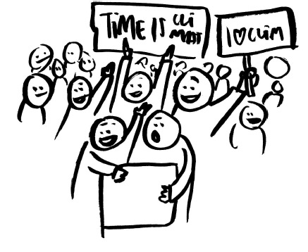
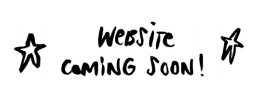

DIMANCHE 2 DÉCEMBRE 2018 aura lieu la plus grande marche pour le climat jamais connue en Belgique.
ET TOI ? Qu’as-tu prévu le 2 décembre ? Un repas de famille, une virée dans les Ardennnes ? Non, non... Dimanche 2, y’a 1000 fois plus important! Y’a CLIMAT !
Départ de la marche à 12h à gare du Nord et finit à 17h au Cinquantenaire. Beaucoup plus d'infos sur claimtheclimate.be

L'ACTION CONTINUE ICI
Citizens for climate est un mouvement citoyen spontané, né dans la foulée des récentes mobilisations massives dans le monde. Son objectif est de référencer les actions et événements qui vous permettent de vous mobiliser en masse pour le climat !
Restez au courant de Citizens for climate :

A QUI S'ADRESSE CITIZENS FOR CLIMATE ?
> CITOYEN
Tu es citoyen du monde, citoyen belge ?
En plus des éco-gestes de ton quotidien, tu cherches à bouger pour sensibiliser encore
plus ton entourage sur la question. Ici, tu trouveras dans notre agenda les événements qui
réclament une justice climatique, que ce soit à Bruxelles, en Flandre ou en Wallonie. Et
surtout, comment agir ensemble pour être plus fort.
> ASSOCIATION / ORGANISATION / COLLECTIF
Tu organises une action/un événement de mobilisation civile à dimension collective ?
(Rassemblements, pétitions, boycotts, actions en justice, lettres ouvertes, sittings,
éducation permanente, actions directes non violentes, etc.) Envoie-nous les détails de ton
événement, nous le publirons pour t’aider à faire masse !
Complète le formulaire en ligne
ou envoie-nous toutes les infos à citizensforclimate.be@gmail.com
ZONDAG 2 DECEMBER 2018 gebeurt de grootste mars voor het klimaat dat België ooit gekend heeft.
EN JIJ ? Wat zijn jou plannen voor 2 december? Een familiemaaltijd, een wandeling in de Ardennen? Ja maar nee... Zondag 2 is er 1000 keer belangrijker! 't is KLIMAATDAG!
Het begint om 12u bij het Noord-Station in Brussel tot 17u in het Jubelpark. Veel meer info vind je op claimtheclimate.be
Citizens for climate is een spontane burgerbeweging, geboren in de nasleep van recente massale mobilisaties overal ter wereld. Het doel is om te verwijzen naar acties en evenementen die je in staat stellen massaal te mobiliseren voor het klimaat!
Blijf op de hoogte van Citizens for climate :
VOOR WIE IS CITIZENS FOR CLIMATE ?
> BURGER
Ben je een burger van de wereld, een Belgische burger?
Naast ecologische gebaren van je dagelijkse leven, probeer je om je omgeving nog meer bewust te maken van het probleem. Hier vind je in onze agenda de evenementen die pleiten voor klimaatjustitie, of dat nu in Brussel, Vlaanderen of Wallonië gebeurt. Maar vooral hoe samen op te treden om sterker te zijn.
> VERENIGING / ORGANISATIE / COLLECTIEF
Je organiseert een actie / evenement van civiele mobilisatie met collectieve dimensie?
(Bijeenkomsten, petities, boycots, rechtszaken, open brieven, zittingen, permanente educatie, directe geweldloze acties, enz.) Stuur ons de details van uw evenement, wij zullen het publiceren om je te helpen massaal te mobiliseren!
Vul het online formulier in door hier te klikken
of stuur ons alle info naar citizensforclimate.be@gmail.com